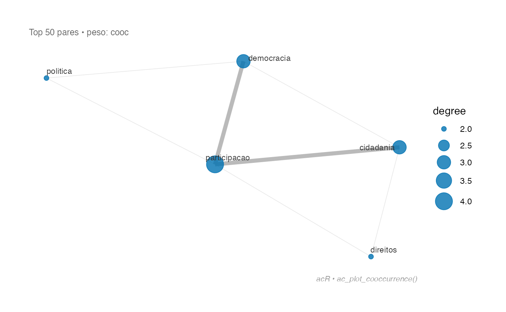

ac_plot_cooccurrence() gera um gráfico de rede a partir de um tibble de
co-ocorrências (saída de ac_cooccurrence()), usando ggplot2 e ggraph.
Usage
ac_plot_cooccurrence(
cooc,
top_n = 50L,
weight = c("cooc", "pmi", "dice"),
layout = "fr",
node_color = "#0072B2",
edge_color = "grey70",
title = NULL,
...
)Arguments
- cooc
Tibble com co-ocorrências, saída de
ac_cooccurrence().- top_n
Número de pares mais frequentes a exibir. Padrão:
50.- weight
Coluna a usar como peso das arestas:
"cooc"(padrão),"pmi"ou"dice".- layout
Layout do grafo. Qualquer layout suportado por
ggraph::ggraph():"fr"(Fruchterman-Reingold, padrão),"kk","circle", etc.- node_color
Cor dos nós. Padrão:
"#0072B2".- edge_color
Cor das arestas. Padrão:
"grey70".- title
Título do gráfico. Padrão:
NULL.- ...
Ignorado.
Examples
df <- data.frame(
id = c("d1", "d2", "d3"),
texto = c(
"democracia participacao cidadania",
"participacao politica democracia",
"cidadania direitos participacao"
)
)
corpus <- ac_corpus(df, text = texto, docid = id) |> ac_clean()
cooc <- ac_cooccurrence(ac_tokenize(corpus), min_count = 1)
if (requireNamespace("ggraph", quietly = TRUE)) {
ac_plot_cooccurrence(cooc)
}
